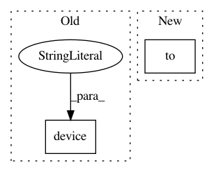

68e38ed44f15c0a0821b5db3d0004cd1843b384e,tests/framework/test_model.py,ModelTest,test_cpu_cuda,#ModelTest#,266
Before Change
logs = self.model.fit_generator(train_generator, valid_generator, epochs=ModelTest.epochs, steps_per_epoch=ModelTest.steps_per_epoch, validation_steps=ModelTest.steps_per_epoch, callbacks=[self.mock_callback])
self.model.cpu()
logs = self.model.fit_generator(train_generator, valid_generator, epochs=ModelTest.epochs, steps_per_epoch=ModelTest.steps_per_epoch, validation_steps=ModelTest.steps_per_epoch, callbacks=[self.mock_callback])
self.model.to(torch.device("cuda:0"))
logs = self.model.fit_generator(train_generator, valid_generator, epochs=ModelTest.epochs, steps_per_epoch=ModelTest.steps_per_epoch, validation_steps=ModelTest.steps_per_epoch, callbacks=[self.mock_callback])
self.model.to(torch.device("cpu:0"))
logs = self.model.fit_generator(train_generator, valid_generator, epochs=ModelTest.epochs, steps_per_epoch=ModelTest.steps_per_epoch, validation_steps=ModelTest.steps_per_epoch, callbacks=[self.mock_callback])
After Change
self.model.cpu()
logs = self.model.fit_generator(train_generator, valid_generator, epochs=ModelTest.epochs, steps_per_epoch=ModelTest.steps_per_epoch, validation_steps=ModelTest.steps_per_epoch, callbacks=[self.mock_callback])
self.model.to(torch.device("cuda:" + str(ModelTest.cuda_device)))
logs = self.model.fit_generator(train_generator, valid_generator, epochs=ModelTest.epochs, steps_per_epoch=ModelTest.steps_per_epoch, validation_steps=ModelTest.steps_per_epoch, callbacks=[self.mock_callback])
self.model.to(torch.device("cpu"))
logs = self.model.fit_generator(train_generator, valid_generator, epochs=ModelTest.epochs, steps_per_epoch=ModelTest.steps_per_epoch, validation_steps=ModelTest.steps_per_epoch, callbacks=[self.mock_callback])
In pattern: SUPERPATTERN
Frequency: 3
Non-data size: 2
Instances
Project Name: GRAAL-Research/pytoune
Commit Name: 68e38ed44f15c0a0821b5db3d0004cd1843b384e
Time: 2018-05-23
Author: fredy_14@live.fr
File Name: tests/framework/test_model.py
Class Name: ModelTest
Method Name: test_cpu_cuda
Project Name: rusty1s/pytorch_geometric
Commit Name: 0d8c89e9f985d9575682f7f2aeeb8c45f2e36d66
Time: 2019-08-15
Author: matthias.fey@tu-dortmund.de
File Name: torch_geometric/utils/negative_sampling.py
Class Name:
Method Name: negative_sampling
Project Name: ray-project/ray
Commit Name: b0b046316183e3f09b36678230c3af11d289b31f
Time: 2020-07-29
Author: sven@anyscale.io
File Name: rllib/utils/torch_ops.py
Class Name:
Method Name: explained_variance